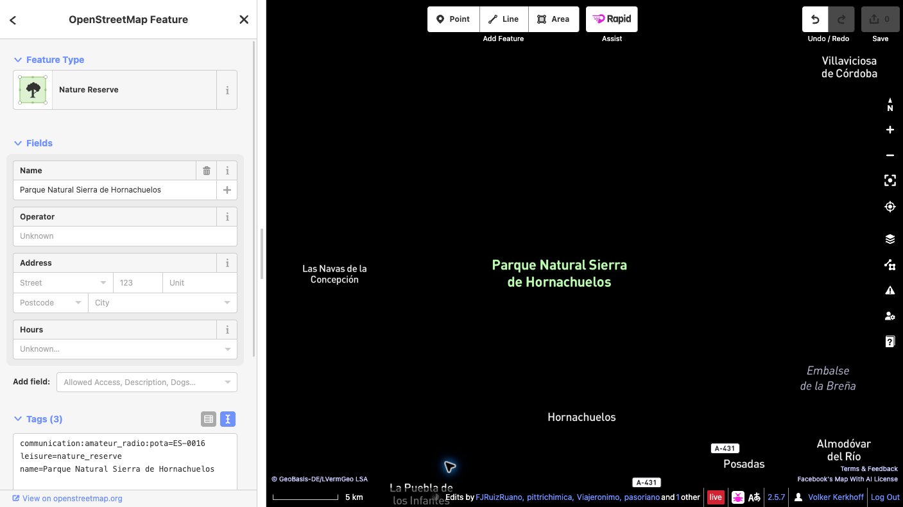

Añadir una referencia POTA a OpenStreetMap
Esta guía muestra cómo vincular un parque existente de OpenStreetMap (OSM) con su referencia de Parks on the Air (POTA).
Ejemplo de esta guía
Parque Natural Sierra de Hornachuelos — referencia POTA ES-0016. Comprueba el parque en la ficha oficial de POTA.
Antes de empezar
Necesitas una cuenta activa de OpenStreetMap para subir cambios. Si aún no tienes una, regístrate primero y después inicia sesión. Esta guía usa el editor iD, que funciona en el navegador.
Pasos
- Confirma el parque. Busca Sierra de Hornachuelos en OSM y comprueba el nombre, el ámbito y las etiquetas del elemento existente que representa el parque completo. Un espacio protegido puede estar mapeado como una relación multipolígono o como una vía cerrada.
- Selecciona el elemento completo. En iD, acerca el mapa y selecciona el área del parque. Si has seleccionado una vía miembro, abre la relación que representa el espacio protegido. No añadas la etiqueta a todas las vías límite.
- Añade una sola etiqueta. En el panel del elemento, abre Todas las etiquetas (el texto puede variar según la versión de iD) y añade exactamente:
communication:amateur_radio:pota=ES-0016No cambies las etiquetas existentes ni la geometría. No crees un punto o un límite nuevo para el código POTA. Si ya hay una etiqueta POTA o el elemento no está claramente identificado, detente y pide consejo a la comunidad OSM local.

- Guarda el borrador y revísalo. Pulsa Guardar para abrir el panel de subida. Lee la lista completa de cambios y comprueba que solo contiene la etiqueta POTA prevista en el elemento correcto. Escribe un comentario descriptivo, por ejemplo:
Añadir referencia POTA ES-0016 al Parque Natural Sierra de Hornachuelos. - Haz la confirmación final. Antes de subir, confirma que el elemento seleccionado representa todo el espacio protegido, que la clave y el valor son exactamente
communication:amateur_radio:pota=ES-0016y que no han cambiado la geometría ni otras etiquetas. Lee cualquier aviso. Si algo no coincide, cancela y corrige el borrador. Cuando todo sea correcto, pulsa Subir para publicar el cambio en OSM. La subida es la confirmación pública definitiva. - Verifica el cambio publicado. Cuando iD confirme que la subida se ha realizado, abre el elemento en OSM y comprueba que aparece la etiqueta. Si falla, sigue el mensaje de error y vuelve a intentarlo solo después de revisar los cambios. El mapa POTA puede tardar un poco en actualizarse.